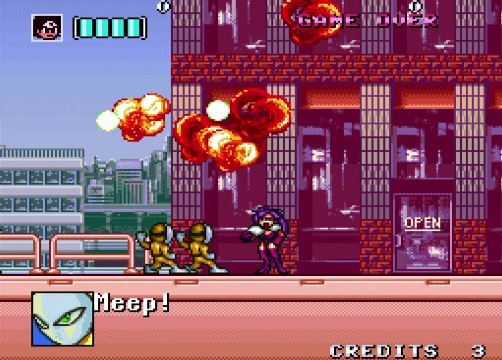
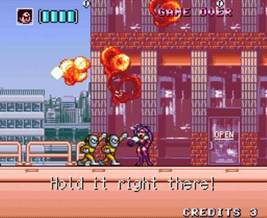
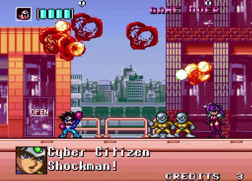
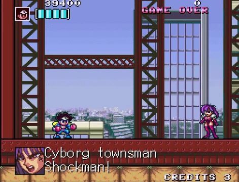
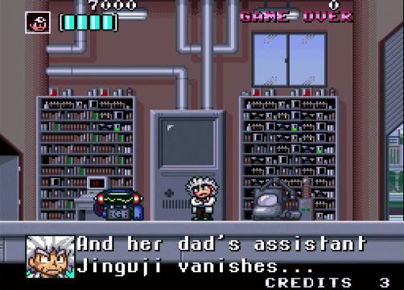
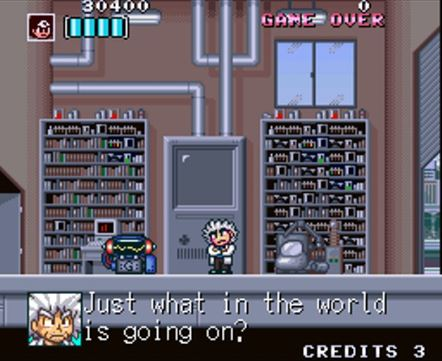
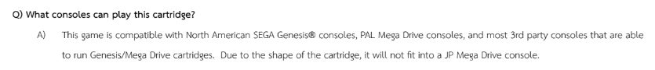

What is retro-bit?
Among other things, retro-bit publishes licensed Japanese games in physical cartridges for 16-bit consoles with an English translation. These cartridges are known as reproduction cartridges or repros for short.
These games are published under the label Retro-Bit Publishing. For simplicity, I will refer to them as simply retro-bit.
Link to their mission statement: https://retro-bit.com/retro-bit-publishing/
What is this about?
I suspect that several of retro-bit’s releases presented as new and original translations of old SNES and Genesis games are in fact plagiarism of existing fan translations or, in at least one instance, other official translations.
By plagiarism, I mean that they’ve used graphics, code and/or texts from pre-existing translations while claiming otherwise.
I’m aware that Aeon Genesis has collaborated with retro-bit in the past, and when they have, they were always credited. Having contacted them, I know they didn’t work on these games. Neither did MIJET, nor did Svambo.
Here’s the evidence I’ve gathered. I know that some of it is tenuous and some of it is egregious, but it all adds up. You can be the judge of that.
The incriminating games are:
retro-bit’s Shubibinman Zero FAQ states:

retro-bit’s Assault Suits Valken FAQ states:

retro-bit’s Majyūō: King of Demons FAQ states:

Quick navigation:
Case #1: Shockman Zero
Case #1: Shockman Zero - Font
Case #1: Shockman Zero - Script
Case #1: Shockman Zero - BB Gang
Case #1: Shockman Zero - Credits
Case #1: Shockman Zero - Sources
Case #2: Assault Suits Valken
Case #2: Assault Suits Valken - Name
Case #2: Assault Suits Valken - Font engine
Case #2: Assault Suits Valken - Script
Case #2: Assault Suits Valken - Credits
Case #2: Assault Suits Valken - Sources
Case #3: Gley Lancer
Case #3: Gley Lancer - Fan Translation
Case #3: Gley Lancer - Nani?
Case #3: Gley Lancer - Was that ROM built in a day?
Case #3: Gley Lancer - Credit where credit is due
Case #3: Gley Lancer - Sources
Case #4: Majyūō: King of Demons
Case #4: Majyūō - Sources
My thoughts
Game 1: Shockman Zero

Kaizou Choujin Shubibinman Zero (改造町人シュビビンマン零) is a 1997 for the Satellaview (the addon of the Super Famicom only released in Japan). It was originally intended for a 1994 cartridge release, hence the “1994” on the title screen.
Over the last few years, the game had a regain of popularity and multiple versions have been released:
2017 release

In 2017, Extreme and Columbus Circle released a cartridge version in Japanese.
2023 fan translation

On January 29 2023, an unofficial English translation of the Super Nintendo game Shockman Zero was released on romhacking.net by Svambo, Anonymousse and Nokia3310.
It is based on the 2017 release.
2024 digital release

In 2024, Extreme, Ratalaika Games and Shinyuden released a digital version of the game, in English, on all modern consoles.
2024 retro-bit cartridge release
Between June 24, 2024 and July 29, 2024, retro-bit.com opened pre-orders for the cartridge release of the same game, in English as well. (MSRP: $54.99 USD / €64.99 EUR)
The FAQ that you can find at there states:


Evidence A: the font
The original Japanese game has an 8x8 latin font for the menus/ui. There’s also a partial font for the words “START”, “STAGE CLEAR” and “GAME OVER”.

But all the dialogs are using a 16x16 font in kanas and kanjis with a few exceptions like the “B” in BB団.

Which is why Svambo had to create a custom 8x16 latin font for the dialogs. I looked at both roms and this font is not in the original Japanese rom.

When looking at the retro-bit Press Kit release, you can see that the font they used is identical to svambo’s.
It’s more obvious when looking at their preview video of the game: https://youtu.be/YhrawWNKsM4The (The Press Kit screenshots do not respect the SNES aspect ratio and introduce artefact scan lines).
| retro-bit |
Svambo patch |
|---|---|
 |
 |
 |
 |
For example, the lowercase b and o have a discrepancy in Svambo’s font:

The shadow of the b loop does not match the shadow of the o loop (the b shadow has a weird right angle). Here’s how the shadow should look like if they were consistent:

Somehow, that exact same discrepancy appears in the retro-bit font:

You could analyze every letters side by side and find that the fonts are identical.
Surely this is just a coincidence.
I should also note, the font you see, over some game footage, in their trailer is not from the game. It’s done in some video editing software for the trailer. Don’t get fooled!
Evidence B: the script
Here are some of the texts, side by side.
For good measure, I included screenshots from the PS5 digital release. (Notice how they created a new font)
It helps to highlight the similarities between the retro-bit translation and the Svambo’s patch.
| retro-bit release |
svambo patch |
PS5 digital release |
|---|---|---|
 |
||
 |
 | |
|  | ||
 |
 |
|
 |
||
 |
 | |
 |
 |
|
 |
||
|  |  |
|
 |
||
 |
 |
|
 |
||
 |
 | |
|  | ||
 |
||
 |
 |
|
 |
 |
|
 |
||
 |
||
 |
 |
|
 |
||
That’s a lot of similarities. It looks like someone ran through the script with a thesaurus to replace a few words here and there:
wicked became impish
Who are you?! became Who are you! (why would they remove the question mark?)
resident cyborg became cyborg townsman
etc.
Some people would say it’s a coincidence.
As one could argue that a simple sentence can only be translated in so many ways, I took a look at one line in the Japanese version:
| Japanese | PS5 digital release |
|---|---|
 |
 |
The line よくおぼえておくわ means “I’ll remember this well”. In the Svambo translation, the translator took the creative liberty to translate it as “I’ll put you on my list!”.
Now look at the retro-bit release line…
| retro-bit release | Svambo patch |
|---|---|
I find this very odd. But it’s true that coincidences happen.
Another example:

The Japanese き〜！(ki~) is an onomatopea for a long hysterical scream. In manga, that would translated by “screech”.
| retro-bit release | Svambo patch |
|---|---|
Not only do both translations keep that “ki” as if it were Japanese but they share the same odd formatting “…kee…!”
Evidence C: Who the hell is BB Dan?

2017 Japanese release

In the intro of the Japanese, the two protagonists and the two antagonists are introduced with their portrait and their names.
In the backdrop, the text says (in latin alphabet) SCHBIBINMAN for the protagonists and BB DAN for the antagonists.
These are the readings of the Japanese words シュビビンマン (shubibinman) and BB団 (BB dan) which are used in the dialogs:
| シュビビンマン | BB団 |
|---|---|
 |
 |
Note that the word 団 (dan) is a common noun meaning “group”.

2024 digital release
In the digital release, they translated BB団 as BB Gang as shown in the intro and the texts:
| intro | dialog |
|---|---|
 |
 |
2023 fan translation
In that version, it is translated as B.B. Corps:
| intro | dialog |
|---|---|
 |
 |
2024 retro-bit release
Which brings us to the retro-bit release. How did they translate BB団?
The back of the box says “B.B. Dan group”.

The manual says “B.B. Dan terrorist group”. (Also notice how it says Galka instead of Galko, typo?)

The manual also uses the Japanese visuals with the “BB DAN” backdrop.

But somehow, in the game they are called B.B. Corps in both the intro and the dialogs.


Isn’t that curious? Probably just a curious coincidence.
A minor side note about the manual: they use the terms Schbibinman and Shockman.


Which to me shows a lack of consistency and/or quality control. The English manual for Mega Man doesn’t switch back and forth between the names Rockman and Mega Man, does it?
Evidence D: Say my name
The name of the game is Kaizou Choujin Shubibinman Zero (改造町人シュビビンマン零).
The main character introduces himself as Kaizou Choujin Shubibinman (改造町人シュビビンマン).
At the end of the game, right before the staff roll, the name of the game is written in katakana: かいぞうちょうじん シュビビンマン ゼロ.
| Introduction (Japanese) | Staff Roll (Japanese) |
|---|---|
 |
 |
As we’ve seen before, in Svambo’s translation, Kaizou Choujin Shubibinman is translated as “Resident Cyborg Shockman”
| Introduction (Svambo) | Staff Roll (Svambo) |
|---|---|
 |
 |
In retro-bit’s translation, Kaizou Choujin Shubibinman is translated as “Cyborg Townsman Shockman”.
But look at what appears before the staff roll:
| Introduction (retro-bit) | Staff Roll (retro-bit) |
|---|---|
 |
 |
Another coincidence you say?
Another thing I found while comparing the staff roll of the different versions, there are 2 screens of “Special Thanks” towards the end:
| Special Thanks 1 (Svambo patch) | Special Thanks 2 (Svambo patch) |
|---|---|
 |
 |
In retro-bit’s version, the translator replaced two names with the word “Translator” and his own name (I blurred it here to avoid doxxing).
| Special Thanks 1 (retro-bit) | Special Thanks 2 (retro-bit) |
|---|---|
 |
 |
I’m sorry Hida Taiji and Yamanaka Youko. Retro-bit’s translator thinks you’re not special enough to be thanked!
Seriously, what kind of ego and disregard for other people’s work do you have to have to do something like this?
I’ve translated several snes games, always including the staff roll when possible, and I always worry I may get some names wrong. Here it’s trivial because the credits are written in katakana. But even when there are kanjis in the credits, I make sure to get the reading right by looking the people up in staff databases, studio websites or personal blogs. I even once had to find a Japanese dev on facebook to get their name right. I have no strong opinion about fan-translation including the team’s name. I’ve done it sometimes but never at the expense of the original staff!
That someone would remove names from the original credits of a game blows my mind. And to put their own! Is that what they call adding insult to injury?
Someone needs to tell this person that the expression traduttore, traditore was not meant to be taken literally.
The only good thing about this release is the artwork. The artist (DANMAKUMAN) did a fantastic job for the box, the manual and the promotional materials.
I think it’s a shame that they don’t get their own credit line in the manual. They’re lumped in under “special thanks” with the youtubers who got a free copy of the game to do their 10-min long glorified ads.
Only the translator gets credited separately! Maybe they’re the one who edited the manual?

Svambo
I was able, through an intermediary, to contact Svambo. They reported that retro-bit had approached them to pay for the translation. Because Svambo only did the programming and wasn’t able to reach out to his translator, he declined retro-bit’s offer.
This is hearsay, but this shows that retro-bit was aware of Svambo’s patch and that paying to use it was the right thing to do. The second right thing to do, after he declined, was to make your own translation from scratch (graphics, code and script).
Sources
retro-bit FAQ and Press Kit at the bottom of this page:
https://retro-bit.com/shockman-zero/
FAQ copy:
Schbibinman Zero (Shockman Zero) - FAQs.pdf
PS5 digital release footage from:
retro-bit’s edition footage :
Madlittlepixel - Shockman Zero (Unboxing & Gameplay)
Retro-Bit - Preview Stream: Shockman Zero with IceStrike256!
Manual images from:
Archades Games - Shockman Zero Unboxing
Game 2: Assault Suits Valken
Here are the different releases of this game and how to tell them apart:
| Year | Version | Platf. | Lang. | Differences |
|---|---|---|---|---|
| 1992 | Assault Suits Valken | SFC | JP | Options shows JP controller source |
| 1993 | Cybernator | SNES | EN | Options shows NA controller No message speed option No character portrait in the dialogs source |
| 2002 | Aeon Genesis translation | SNES | EN | Uses the Cybernator font Same options as the 1992 release |
| 2023 | Assault Suits Valken Declassified (March 2023) | Switch | JP/EN | Japanese font is the 1992 one English uses a unique variable width font Options has no controller type and no controller image source |
| 2023 | retro-bit’s Assault Suits Valken (pre-order Nov 2023, release Apr 2024) | SNES | EN | Uses the Cybernator font Same options as the 1992 release except that “EXIT” replaces “NAME ENTRY” |
It’s important to know these differences when looking at game footage in order not to mistake one version with another.
Also worth noting, the Japanese script of the Switch release is the same as the original 1992 script.
For this game, I’ll be honest, it is harder to show that the Aeon Genesis translation was used for the retro-bit release.
Mainly because they both use the font from the 1993 NA release under the name Cybernator, but I’ll see what I can find.
Evidence A: Don’t say my name
Both versions happen to have a similar issue with the name entry screen:
Aeon Genesis version

retro-bit version

Other versions, like the Switch digital release, don’t have this problem somehow.
Add that to the pile of coincidence…
Evidence B: the font engine
As I was looking into the game code to figure out why the name entry was bugged, I needed to extract the character encoding used.
I found something interesting. In the original Japanese game, every character (16x16 pixels) is encoded with 2 bytes.
By replacing the font with an ascii font of 8x16 pixels, you double the number of characters on a dialog line but if you keep the encoding of 2 bytes, it’s going to use up too much memory space.
The Aeon Genesis patch keeps the ROM size of 1MB by using a clever, albeit convoluted encoding.
So here is the Aeon Genesis encoding table:


The characters from 0x00 to 0x5A are pretty much the printable ASCII table shifted down 0x20 (apart from the “end” and “tm” characters).
The unique thing about this encoding are the characters between 0x5B and 0xEF (The characters above 0xF0 are control bytes for termination, line break, portraits and variables).
These are all pairs of characters. It may not be clear from the picture, many of them include a space. 0x5F is “s " not “s”. Also I didn’t extract the ones between 0xA0 and 0xDF, but they’re all pairs too.
They must have been generated by doing a frequency analysis on the script to find the most recurring pairs of characters.
In order to make this work, heavy changes were made to the font engine. It introduced a funny side-effect: it takes a different number of frames to render a character (that is, decoding it from ROM into WRAM and transferring it to VRAM) depending if it’s on the odd or even tilemap positions.

If you run the game frame by frame and count them, you get the following pattern: 7 frames, 3 frames, 7 frames, 3 frames…

Compare that to the previous versions, you’ll count exactly and consistently 5 frames per characters:
| 1992 Japanese game | 1993 NA (Cybernator) |
|---|---|
 |
 |
Now I invite you to go on YouTube (if you don’t trust me) and look at gameplay footage (at 60fps, that’s important) of the retro-bit release, like this one.
You can pause during any in-game dialog (with the portrait) and using the keyboard control (Press the “,” key to go backwards frame-by-frame, or “.” to go forwards.) count the frames per character:
7 frames, 3 frames, 7 frames, 3 frames…
To be thorough, I downloaded the video and counted the frames using a VLC plugin: same pattern.
For the sake of argument, I did the same thing with footage from the Switch release: exactly and consistently 2 frames per character (and they even use a nice variable-width font).

To recap
| version | frame count pattern |
|---|---|
| 1992 Japanese game | 5555555555 |
| 1993 NA game | 5555555555 |
| 2002 Aeon Genesis patch | 7373737373 |
| retro-bit release | 7373737373 |
| Nintendo Switch | 2222222222 |
What are the odds that two completely separate translations, by separate people, more than 20 years apart, exhibit the same weird pattern?
No seriously, please, someone good at maths tell me the odds, I really want to know.
Here’s another tangential question I have about the font. retro-bit got the license from Masaya Games to translate the game. Since they’re using the font from Cybernator, the 1993 version localized and published by Konami, shouldn’t this create some licensing issues? Konami is still around, I would imagine that they still own the assets created specifically for their localization. I’m just asking questions, I’m not a lawyer.
Evidence C: The script
I’ve noticed a lot of similarities and notable differences between the dialogs of the different versions of the game.
For one, the English version for the Nintendo Switch is taking some creative liberties.
When it comes to the retro-bit release, they made the following statements:
We can break it down like this:
- Their translation and the Switch’s translation are unrelated
- Their translation is as close to the Japanese version as possible
- No existing translations were used
- Few changes were made to display texts properly
I’m going to focus on two sequences specifically.

The first one is section 2 of the last stage, near this building, the following dialog occurs :
議事堂はもうすぐだ！
侵入して議会を押さえ
きゃああっ！
どうしたっ!?
バーシスが被弾！
でも、まだ大丈夫。
もちこたえてるわ。
And here are all the translations side by side (click image to enlarge):

Not only is the retro-bit translation not accurate or anywhere near the Japanese meaning, but it is the Nintendo Switch script verbatim!

The second sequence is also during the last stage, inside the president’s office (sorry for the ending spoiler) :
もうあきらめるんだな
そのつもりだ・・・
きさまには責任をとってもらう。
責任？なんの責任だ？
この戦争は私が起こしたわけじゃない。
時の流れが我々を戦争へと導いたにすぎん！
戦争の原因なんて問題じゃない！
この戦争で死んだ多くの人々への責任をとるんだ
・・・・今の私にできることはこれぐらいだ・・
・・・・・・・こんな、ことで・・・・・・・・
こんなことで責任をとったつもりなのかっ！
And here are all the translations side by side. I’ve added arrows to highlight the similarities. (click image to enlarge)
The Japanese script doesn’t use the words “over”, “inevitable”, “choice” or “coward”. The Nintendo Switch version, which takes creative liberties (like using the term war crimes), does. As well as the retro-bit version, which looks like a convenient blend of both the fan translation and the Switch one.
“Coincidental” they say…
That covers the first 3 points.
As for the fourth point “making changes to display text properly”, I’ve watched tons of footage of all the versions. The only one I’ve seen with buggy texts was the retro-bit edition (it’s not a consistent bug but it’s there):


So there.
Evidence D: The credits
As I explained in the Shockman Zero section, translating credits can be tricky when they’re written in kanji. Every kanji has multiple readings, a native Japanese speaker may make an educated guess but the only way to know for sure is asking the person.
Nowadays, there are website like mobygames where you can find the credits of many games. By cross-referencing multiple games, the names of Japanese staff can be verified. But many older fan translations contain kanji reading errors in the translated credits, this game is no exception.
I have listed several people from the credits, their real name (from mobygames) and how the different versions actually translated them. See how the same errors appear for both versions (Aeon Genesis and retro-bit).
| . | Programmer |
|---|---|
| Japanese | 川野 幸広 |
| mobygames | Yukihiro Kawano |
| Cybernator | Y.Kawano |
| Switch: | Yukihiro Kawano |
| Aeon Genesis | T.Kawaru |
| retro-bit | T.Kawaru |
| . | Assistant |
| Japanese | 佐藤 光 |
| mobygames | Hikaru Satō |
| Cybernator | H.SATOH |
| Switch | Hikaru Sato |
| Aeon Genesis | H.Saitou |
| retro-bit | H.Saitou |
| . | Assistant |
| Japanese | 林田 淳 |
| mobygames | Jun Hayashida |
| Cybernator | J.Hayashida |
| Switch | Atsushi Hayashida |
| Aeon Genesis | J.Hayasuioh |
| retro-bit | J.Hayasuioh |
In the PC-Engine game Shockman (not the same one as above), which has credits in romaji, they are credited as J.HAYASHIDA. So I’m inclined to believe the Switch localizer also got the name wrong.
| . | Supervisor |
|---|---|
| Japanese | 渋谷実夫 |
| mobygames | Michio Shibuya |
| Cybernator | M.SHIBUYA |
| Switch | Michio Shibuya |
| Aeon Genesis | M.Sibuya |
| retro-bit | M.Sibuya |
Another thing to note, the Japanese language has long vowels. There are different ways to romanize them.
3 names in the credits have a long vowel: Ōya, Satō and Saitō.
| Cybernator | Switch | Aeon | retro-bit |
|---|---|---|---|
| OHYA | Oya | Ohya | Ohya |
| SAITOH | Saito | Saitou | Saitou |
| SATOH | Sato | Saitou | Saitou |
Cybernator always uses -OH.
The Switch version doesn’t transcribe long vowels.
Aeon Genesis and retro-bit mix -Oh and -Ou, but each on the same names.
Coincidence?
Sources
retro-bit FAQ / Press Release: https://retro-bit.com/assault-suits-valken/
retro-bit’s release footage:
Nintendo Switch footage:
(English) https://youtu.be/tK1__-yGQzw
(Japanese) https://youtu.be/1hyzBu-l9vI
https://youtu.be/zf-fiEm3RHs
Aeon Genesis translation footage: https://youtu.be/z00aDkHNafA
Game 3: Gley Lancer
The fan translation
The Gley Lancer fan translation is from 2006 by MIJET (aka M.I.J.E.T.).
It was uploaded to romhacking.net in 2007.
The FAQ for the retro-bit game doesn’t mention whether the translation is original or not but I found something on that hellhole formerly known as Twitter:

Just like with Svambo’s patch for Shockman Zero, retro-bit was fully aware of the existence of a fan translation for Gley Lancer.
Retro-bit edition
If you’ve made it so far and still think to yourself “this is nitpicking, this is all speculation, there’s no proof”, well I have good and bad news.
The bad news is that I had written a details analysis comparing the versions of Gley Lancer, like I did for the other games, but I had to delete everything.
The good news is I did that because something major happened: thanks to a good samaritan, I was able to get my hand on a copy of the ROM of retro-bit’s edition of Gley Lancer!
No more shoddy gameplay screenshots, let’s dive into the actual game.
Nihongo jōzu!
The first thing I did with the ROM is to play it on two different regions (US and JP).
Something of a miracle happened:
Open Video Player
Here’s a YouTube link if the video doesn’t load.
TLDW: If you play on a US/EU region console the game is in English, if you play on a JP region console the game is in Japanese.
That’s amazing! Why isn’t it mentioned anywhere in the promotional materials? Why go through the trouble of making a dual-language cartridge and not to advertise it?
And the retro-bit FAQ doesn’t mention it:

Correct me if I’m wrong, I thought it was the other way around: the Japanese cartridge won’t fit in a Western console but a Western cartridge should fit in a Japanese console?
Now I didn’t discover this feature randomly. I did what nobody does: read the MIJET translation readme.
So both retro-bit’s and MIJET’s version are dual-language. Interesting…
Beyond Compare
I’m going to compare the ROMs with a program called Beyond Compare. It’s a powerful tool used to compare 2 text files or 2 binary files (hex) side by side. On the left of the interface, there is a color-coded navigation bar: white for identical lines, red for the different lines. That bar represents the entirety of the files.
| Example of Text Compare | Example of Hex Compare |
|---|---|
 |
 |
As a reference point and to show what a comparison looks like, I’m going to use my 2024 translation and the 1998 translation (by Chaotic Translations) of Wedding Peach (SNES) as examples. Because I didn’t use or even look at this old translation to produce mine, it should show.

You can see for the 2 translations of Wedding Peach, not all but most of the changes to the original are different. When compared against each other, these differences add up (3rd bar).
For Gley Lancer, not only are the changes to the original almost identical, but when compared against each other (last bar) most of these differences disappear.
Let me go through what those differences are. (Retro-bit version on the left, MIJET’s on the right)
The differences at the beginning of the ROM are expected:
The header

The licences

The copyrights (Note: I redacted the translator name with $)

In the original ROM, there are several unused areas. Notably between 0xAF3C0 and 0xB0000.
MIJET arbitrarily put the font graphics at address 0xAF500. Even leaving empty space before and after.
Here is this section compared to retro-bit ROM:
Retro-bit ROM (left) vs MIJET patched ROM (right)
“The character tiles are different though?” I hear you say. Indeed, I wondered why the bytes were changing in a set pattern (FA -> F9, AA -> A9… always 2 bits).
I found the answer in Tile Layer Pro, a program to visualize uncompressed ROM graphics.

They changed the color index of the shadow in the whole font. I think it’s actually an improvement, the font is easier to read. But that’s the only difference.
The same change can be seen at address 0xF1D0A for the numbers/punctuation marks:

Same font graphics, only the shadow color changes.
Another unused area in the original ROM is between addresses 0xF0150 and 0xF2280.
That’s where MIJET put the code of the font engine and all the English script.
Lo and behold, retro-bit’s ROM has the exact same code at the exact same address (Everything from the start to the beginning of the script):
Open Video Player
If video doesn’t load, watch on YouTube.
Another good thing I can do with the ROMs is to extract the texts in order to compare them (for the sake of presentation, I replaced the line breaks with §).
Retro-bit script (left) vs MIJET script (right) (click images to enlarge)
Out of 125 lines, only 32 are different. The further into the script (the later in the game it comes up), the fewer and fewer changes were made to MIJET script.
Because the pointers have not been changed, all the lines start and end at the exact same address. And because of that, the lines in retro-bit’s script are never longer than in MIJET’s script. Whenever a line is shorter, it’s padded with spaces. This is very blatant in the “Text Details” in Beyond Compare:
MIJET script on top, retro-bit’s below.
padding after the string
padding before and after the string
padding after the string
mention about???
padding before the line break


Some of the changes don’t even sound like proper English: “conclude a new type of fighter”, “mention about”.
Even IntelliJ IDEA, that I use to write this post, is suggesting that it’s incorrect:
There’s only 125 lines of script! Surely it doesn’t take too much effort to proofread?
I have a theory about how the translated ROM was edited. A normal person would have used a program (custom-made or not) to extract the Japanese text into a file, translate the file, inject the English texts and automatically update the pointers.
I think they only used a hexadecimal editor. That would explain the unmodified pointers, the difficulty of proofreading, the weird padding (sometimes before, sometimes after) and also mistakes like this one:

They moved the question mark but left the ellipsis.
In an hexadecimal editor, any non-printable character such as 0x00 (the termination byte used by the game) appears as a dot. If you only look at the decoded ascii text, it’s indistinguishable from the actual period (0x2E).
Just a thought. If you only use a hex editor, more power to you. I’m not gatekeeping how you should do your romhacking project but between a hobbyist and a paid professional working on a commercial product, the expectations are not the same.
Nihongo not jōzu at all…
The game has two endings depending on what happens in Stage 10. The credit roll after the ending is different for each ending: the bad ending has the credits in English with names in romaji (yes, even in the original Japanese game) and the good ending has the credits in Japanese with the names in kanji.
| Good Ending Credits | Bad Ending Credits |
|---|---|
 |
 |
In the patch readme, MIJET explains that. He also says that he purposefully didn’t translate the good ending credits, out of respect for the people who made the game.
MIJET’s readme
Obviously, in retro-bit’s edition, the good ending credits are also left in Japanese. It’s actually what raised my suspicions a lot, after I heard through the Spanish grapevine that this translation was fishy.
As I was playing through the end of retro-bit’s version to record some footage about a copyright issue (I’ll come back to that later), something caught my eye in the good ending credits.
I’ll be honest, my kanji knowledge is pretty bad but I immediately recognize one of them, along with the name.

英 English (英語=English language)
訳 Translation
ミジェト MIJET (mijeto in katakana)
Yep, you read that right. While retro-bit’s “translator/skilled programmer” gets credited in the bad ending, the good ending credits still have the name of the person of actually did all the work: MIJET.
Isn’t that a beautiful irony?
Relegated to the bad ending and caught by his own inability to read a simple name in katakana (never mind the kanji).
Quick reminder of what they said:

The name MIJET in Japanese on their cartridge is probably just a tribute. An easter egg…
Sega does…
As we’ve established that retro-bit’s Gley Lancer is nothing but a slightly modified version of MIJET’s fan translation, I believe it creates some licensing/copyright issues.
Masaya Games is a brand, created in 1984 by Nippon Computer Systems (NCS). The brand was transferred to Extreme in 2014.
That is reflected at the start of the game where the NCS copyright is replaced by the Extreme copyright:
| original intro | retro-bit’s edition intro |
|---|---|
 |
 |
This is written with the Japanese font. This font contains some letters but not all. The only reason they were even able to spell out EXTREME is because the game uses X once in a ship’s name:
 And because the characters are encoded in order of use in the game and not alphabetically (not even in standard kana order), the numbers are not near each others. Which could explain why they didn’t write
And because the characters are encoded in order of use in the game and not alphabetically (not even in standard kana order), the numbers are not near each others. Which could explain why they didn’t write (C) 2023 EXTREME as they do on the title screen.
They must have struggled to find the X and couldn’t be bothered finding the 3.
1992 is 0038 0199 0199 0019 and 2023 is 0019 001A 0019 006C. There you go.
retro-bit still uses the old Masaya logo, not the new one you can see in all other re-releases and all over their marketing assets…
| New logo | retro-bit’s edition intro |
|---|---|
 |
Instead of Extreme, the very end of the credits (good ending) still says:
制作
日本コンピューターシステム株式会社
Production
Nippon Computer Systems

But more importantly, unlike all other re-releases (Columbus Circle’s physical or the digital version on modern consoles), the game starts with the emblematic Sega logo.

I’m not a lawyer but I’m pretty sure you shouldn’t slap a company’s logo on a game that is neither developed nor published by said company.
It’s really funny considering that on all their cartridges, game boxes and manuals they go to great lengths to avoid saying Sega or Nintendo, as much as Harry avoids saying Voldemort.
The end of the rabbit hole
As I was finishing to write this up, the funniest thing happened. Well, funny… if you’re as cynical as me.
Someone in the retro-bit discord asked a question about Gley Lancer on Switch:
(I’ve anonymized it, but the discord is public you can join it and see for yourself)

Someone from retro-bit said that the versions were slightly different and shared two screenshots: one for retro-bit edition, one for the Switch edition.
The only problem is… and I wish I was making this up… the first screenshot is not from the retro-bit release but from MIJET’s fan translation. You can tell by the font shadow and the text:
| Shared screenshot | retro-bit’s game actual screenshot |
|---|---|
 |
I think I’ve been charitable so far with retro-bit, but there I’m just stumped. I’m out of reasonable explanations. This is just baffling. How is this possible? You tell me.
MIJET
For whoever is considering contacting MIJET about all this, read the disclaimer on their blog.
Sources
https://www.romhacking.net/translations/1173/
retro-bit footage: https://youtu.be/V3D6bJ1FQ30
https://youtu.be/8Rof5zO2lEo
Japanese footage: https://youtu.be/0ilPiq_9TAo
https://retro-bit.com/gley-lancer/
Game 4: Majyūō: King of Demons
The retro-bit FAQ says “no existing script or work” was used:
| 2005 Aeon Genesis | retro-bit release |
|---|---|
 |
 |
It’s the same font.
That’s it.
What else is there to say?
And the slightly modified script is just like all the previous examples, another case of “copy my homework but don’t make it obvious”.
I’ve spent a lot of time already analyzing the other games, someone else go and do a side by side comparison for this one.
As far as I can tell, there’s only two dialogs in the game. At the very beginning and at the end, not much to compare.
But I will go through the credits, just to check if there are any kanji reading errors, like in Assault Suit Valken.
I put the order (first name, last name). Both games list everyone as (last name, first name)
| . | Co-Producer |
|---|---|
| JP | 清水 修 |
| mobygames | Osamu Shimizu |
| Aeon Genesis | Osamu Kiyomizu |
| retro-bit | Osamu Kiyomizu |
| . | Planning |
| JP | 古橋 秀幸 |
| mobygames | Hideyuki Furuhashi |
| Aeon Genesis | Hideyuki Yoshihashi |
| retro-bit | Hideyuki Yoshihashi |
| . | Program |
| JP | 荘埜 毅明 |
| mobygames | Takaaki Sōno |
| Aeon Genesis | Takeaki Sohno |
| retro-bit | Takeaki Sohno |
| . | Graphics |
| JP | 河野 満 |
| mobygames | Mitsuru Kōno |
| Aeon Genesis | Mitsuru Kawano |
| retro-bit | Mitsuru Kawano |
| . | Marketing |
| JP | 小澤 弥生 |
| mobygames | Yayoi Ozawa |
| Aeon Genesis | Yayoi Kobuchi |
| retro-bit | Yayoi Kobuchi |
| . | Package |
| JP | 福島 了 |
| mobygames | Ryo Fukushima |
| Aeon Genesis | Satoru Fukushima |
| retro-bit | Satoru Fukushima |
| . | Tester |
| JP | 久米田 実 |
| mobygames | Minoru Kumeta |
| Aeon Genesis | Minoru Kumeto |
| retro-bit | Minoru Kumeto |
All the same errors on the same names, color me surprised…
Sources:
https://www.romhacking.net/translations/649/
https://youtu.be/eERGNieJ_gY
retro-bit footage: https://youtu.be/TgDCuNhU-3Q
aeon-genesis footage: https://youtu.be/rFZRkS2_wHA
Japanese footage: https://youtu.be/QTkDjtfEVpo
https://retro-bit.com/majyuo/
My thoughts
Can anyone recommend me a moving company? I got a big pile of coincidences to get out of my flat.
Important note: I didn’t include anybody’s name in this post for a reason. I don’t know who or how many people are responsible for this mess, and I’m not here to cast blame. No need to harass anyone, I’m merely laying out facts and asking questions in search of the truth. One fact is that the same person is credited as the translator of these four games and they’re all published by retro-bit.
I was asking myself the question: if you’re going to lift an existing translation patch and pass it as your own, why not change the font? That would be the first move to cover your tracks. Then it occurred to me: the graphics in almost all snes games are compressed (I’ve only seen uncompressed graphics in small Satellaview programs). The thing is that there are no universal tools on snes, to decompress and compress data. Even though most algorithms are based on LZW, RLE or other variants of these, they usually have custom parameters. So it requires good programming skills to reverse-engineer the decompression algorithm (present in the ROM) and develop a compression algorithm (not present in the ROM) that’s ideally as efficient as the one used by the original devs. Unless you’re working on a famous game whose code has been thoroughly and repeatedly analyzed (like Super Mario World or Chrono Trigger), you’re out of luck to find existing tools.
If the “talented programmer” was really talented, they would know how to do that. The fact that in all these cases, the font wasn’t changed leads me to think that they just don’t know what they’re doing.
Except for Gley Lancer, this is obviously not a definitive proof that the content of the fan translations (graphics, engine code, scripts) were stolen (or the script of the Switch edition). The only way to prove that without a doubt would be a side by side comparison of the ROMs and I don’t have the money to buy and dump the retro-bit games (I was lucky with Gley Lancer). Maybe that’s why they’re so expensive?
That being said, having translated about a dozen games from Japanese to English over the last few years as an amateur translator and a professional developer, I am utterly convinced that these four translations by retro-bit use previous fan translations extensively in terms of graphics, game code and scripts. I am convinced that they are not original Japanese to English translations, and can only exist because of previous translations.
All things considered, this would not be a big deal if it weren’t for the thousands of copies of each game produced and sold with a hefty price tag (between €60 and €90).
I believe that the FAQ that claims that “a talented programmer” is working on the translations from scratch is a blatant lie. They’re not working from scratch and they are not talented. My understanding is that the translations are commissioned and not done in-house.
Regardless, it shows they have a terrible production pipeline at the very least. I don’t know.
Even if these fan translations were legally bought, the claim of not using existing work would be false advertisement. You can’t have it both ways.
What I know is that for the price of a AAA game, you should expect a modicum of professional quality. That’s clearly not there.
Special Thanks
Thanks to all the people who helped me put this all together.
Muchas gracias a todas las personas que me ayudaron (Saben quiénes son).
Right to reply
I’ll put links to any public statements made by the people involved here.
Until then, I’ll leave you with a quote and this vignette from Asterix with a roman centurion appropriately named Titus Crapulus.
“El mundo tenía derecho a saber la verdad.”


{kind=link}
{kind=link}
{kind=link}
{kind=link}
Share this post: